| Рекомендация: Модель данных |
 |
|
| Связанные элементы |
|---|
ОбзорМодели данных служат для проектирования структуры постоянных хранилищ данных, используемых системой. Профайл на языке UML для проектирования базы данных предоставляет разработчикам базы данных набор элементов моделирования, позволяющих разрабатывать подробный макет таблиц в базе данных и моделировать макет физической памяти базы данных. Профайл базы данных на языке UML также предоставляет конструкции для моделирования целостности по ссылкам (ограничений и триггеров), а также хранимых процедур, предназначенных для управления доступом к базе данных. Модели данных могут создаваться на уровне предприятия, отдела или отдельного приложения. Модели данных на уровне предприятия или отдела могут использоваться для предоставления стандартных определений для ключевых бизнес-сущностей (таких как клиент и сотрудник), которые будут применяться всеми приложениями всего бизнес-процесса или его части. С помощью этих типов Моделей данных можно также определить, какая система предприятия будет "владельцем" данных для конкретной бизнес-сущности и какие другие системы будут пользователями (подписчиками) данных. Настоящая рекомендация описывает модельные элементы профайла UML, предназначенные для конструирования Модели данных для реляционной базы данных. Поскольку по общей теории баз данных существует бесчисленное множество публикаций, здесь она не рассматривается. Начальная информация по реляционным Моделям данных и Моделям объектов приведена в разделе Концепция: реляционные базы данных и объектная ориентация. Примечание: приведенные в настоящей рекомендации примеры моделирования данных основаны на языке UML 1.3. На момент написания настоящей рекомендации профайл моделирования данных на языке UML 1.4 был недоступен. Этапы Моделирования данныхКак описано в [NBG01], разработка Модели данных подразделяется на три основных этапа: концептуальный, логический и физический. Эти этапы моделирования данных отражают разные уровни подробности в проектировании механизмов постоянного хранения и извлечения данных приложения. Концептуальное моделирование данных обсуждается в разделе КонцепцииКонцептуальное моделирование данных. Логическое и физическое моделирование данных рассматриваются в следующих двух разделах настоящей рекомендации. Логическое моделирование данныхВ логическом моделировании данных Проектировщик базы данных занимается выявлением ключевых сущностей и взаимосвязей, отвечающих за захват важнейшей информации, которую приложению необходимо хранить в базе данных. Во время выполнения задач Анализа варианта использования, Проектирования варианта использования и Проектирования классов Проектировщик базы данных и Проектировщик должны работать совместно, чтобы создаваемые макеты анализа и классов проектирования для приложения адекватно поддерживали разработку базы данных. Во время выполнения задачи Проектирования классов проектировщик базы данных и проектировщик должны выявить набор классов в Модели проектирования, которым потребуется хранить данные в базе данных. Этот набор постоянных классов в Модели проектирования предоставляет Панель модели проектирования, которая хотя и отличается от традиционной Логической модели данных, но отвечает многим тем же потребностям. Постоянные классы, используемые в Модели проектирования, действуют так же, как и традиционные сущности в Логической модели данных. Эти классы проектирования в точности отражают данные, которые необходимо хранить постоянно, в том числе все столбцы данных (атрибуты), которые необходимо хранить, и ключевые взаимосвязи. Все это делает классы проектирования удобной отправной точкой в физическом проектировании базы данных. Создавать отдельную Логическую модель данных необязательно. В лучшем случае, итоговая модель будет захватывать ту же информацию, но в другой форме. В худшем случае, итоговая модель не будет захватывать информацию и поэтому не будет удовлетворять бизнес-потребностям приложения. Если база данных должна будет обслуживать отдельное приложение, то наилучшей отправной точкой будет представление данных с точки зрения приложения. Проектировщик базы данных создает таблицы из этого набора постоянных классов проектирования, чтобы сформировать первоначальную Физическую модель данных. Вместе с тем, возможны случаи, когда проектировщику базы данных потребуется создать идеализированный макет базы данных, не зависящую от макета приложения. В этом случае, логический макет базы данных представляется в виде отдельной Логической модели данных, входящей в состав общей модели (см. раздел Рабочий продукт: модель данных). Эта Логическая модель данных отражает ключевые логические сущности и их взаимосвязи, необходимые для соблюдения требований системы к постоянному хранению данных в соответствии с общей архитектурой приложения. Логическая модель данных может быть сконструирована с помощью элементов моделирования из профайла UML, предназначенного для проектирования базы данных; эти элементы описаны в последующих разделах настоящей рекомендации. Для проектов, использующих этот подход, тесное сотрудничество между проектировщиками приложений и проектировщиками баз данных абсолютно необходимо для успешной разработки базы данных. Логическая модель данных может быть уточнена путем применения стандартных правил нормализации, как описано в разделе Концепция: нормализация, прежде чем ее элементы будут использованы для создания физического макета базы данных. На приведенном ниже рисунке изображен основной подход, основанный на использовании классов Модели проектирования в качестве источника информации для логического проектирования баз данных, позволяющего создать первоначальную Физическую модель данных. На нем также изображен альтернативный подход, основанный на использовании отдельной Логической модели данных. 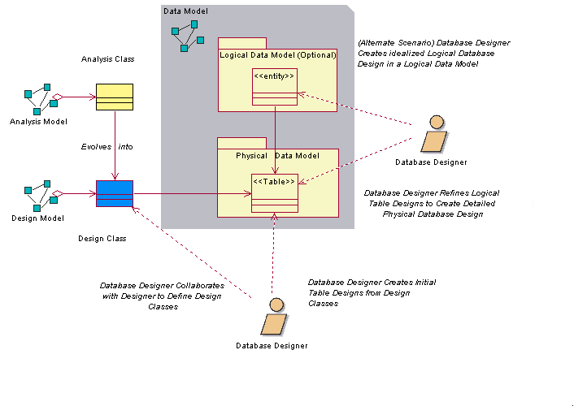 Подходы к логическому моделированию данных Физическое моделирование данныхФизическое моделирование данных - это заключительная стадия разработки при проектировании базы данных. Физическая модель данных состоит из подробных макетов таблиц базы данных и их взаимосвязей, созданных первоначально из постоянных классов проектирования и их взаимосвязей. Механика преобразования классов Модели проектирования в таблицы обсуждается в разделе Рекомендация: прямая разработка баз данных. Физическая модель данных является частью Модели данных, а не самостоятельным артефактом. Таблицы в Физической модели данных содержат определенные столбцы, а также необходимые ключи и индексы. В таблицах также могут быть триггеры, определенные для поддержки тех или иных функций базы данных и целостности системы по ссылкам. В дополнение к таблицам, созданы хранимые процедуры; они задокументированы и связаны с базой данных, в которой они будут находиться. На приведенной ниже диаграмме показан пример некоторых элементов Физической модели данных. Этот пример модели входит в состав Физической модели данных вымышленного приложения электронного аукциона. На нем изображены четыре таблицы (Auction, Bid, Item и AuctionCategory), а также одна хранимая процедура (sp_Auction) и ее класс контейнера (AuctionManagement). На рисунке также изображены столбцы каждой таблицы, ограничения по первичному и внешнему ключам и определенные для таблиц индексы. 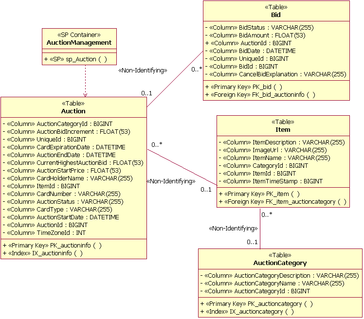 Пример элементов (физической) модели данных Физическая модель данных содержит также отображения таблиц в физические единицы хранения (табличные пространства) в базе данных. Пример такого отображения приведен на следующем рисунке. В этом примере таблицы Auction и OrderStatus отображаются в табличное пространство PRIMARY. Диаграмма также иллюстрирует моделирование реализации таблиц в базе данных (в данном примере - PearlCircle). 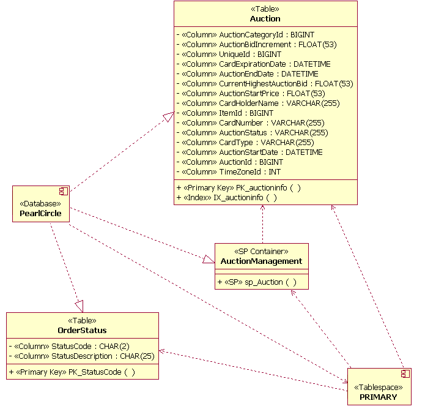 Пример элементов модели хранения данных В проектах, в которых база данных уже существует, проектировщик базы данных может выполнить обратную разработку существующей базы данных для заполнения Физической модели данных. Дополнительная информация приведена в разделе Рекомендация: обратная разработка реляционных баз данных. Элементы модели данныхВ этом разделе даны общие рекомендации по моделированию каждого основного элемента Модели данных на основе профайла UML, предназначенного для моделирования баз данных. После краткого описания каждого элемента модели UML приводится иллюстрирующий его пример. Раздел Взаимосвязи настоящей рекомендации включает описание использования элементов модели. ПакетСтандартные пакеты UML служат для группировки и организации элементов Модели данных. Например, пакеты могут применяться для организации Модели данных в виде отдельных Логических и Физических моделей данных. Пакеты также могут применяться для определения логически связанных групп таблиц в Модели данных, образующих важнейшие "тематические области" данных для бизнес-домена разрабатываемого приложения. На следующем рисунке приведен пример двух пакетов тематических областей ((Auction Management и UserAccount Management), используемых для организации панелей и таблиц в Модели данных. 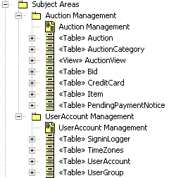 Пример пакетов тематических областей ТаблицаВ профайле UML, предназначенном для моделирования баз данных, таблица моделируется как класс со стереотипом <<Table>>. Столбцы в таблице моделируются как атрибуты со стереотипом <<column>>. Один или несколько столбцов могут быть обозначены как первичный ключ, чтобы обеспечить уникальность записей строк в таблице. Столбцы могут быть также обозначены как внешние ключи. С первичными и внешними ключами связаны ограничения, моделируемые как операции со стереотипами <<Primary Key>> и <<Foreign Key>> соответственно. На следующем рисунке изображена структура примера таблицы, используемой для управления информацией о предметах, проданных на аукционе в вымышленной системе электронного аукциона. 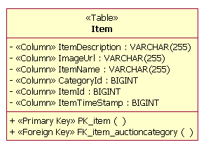 Пример таблицы Таблицы могут быть связаны с другими таблицами посредством взаимосвязей следующих типов:
Раздел Взаимосвязи настоящей рекомендации содержит примеры применения этих взаимосвязей. Информация о том, как эти типы взаимосвязей можно отобразить в элементы Модели данных, приведена в разделе Рекомендация: обратное проектирование реляционных баз данных. ТриггерТриггер - это процедурная функция, запускаемая в результате выполнения некоторого действия в таблице, в которой она находится. Триггер запускается при вставке, обновлении или удалении строки таблицы. Кроме того, триггер может запускаться до или после выполнения табличной команды. Триггеры определены как операции в таблице. Соответствующие операции относятся к стереотипу <<Trigger>>. 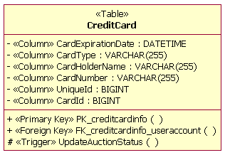 Пример триггера Предметный указательПредметные указатели, или индексы, используются в качестве механизмов, ускоряющих доступ к информации, когда поиск в таблице выполняется по конкретным столбцам. Предметный указатель моделируется в таблице как операция со стереотипом <<index>>. Предметные указатели могут быть уникальными, а также кластерными или некластерными. Кластерные предметные указатели устанавливают обязательное соответствие между порядком строк данных в таблице и порядком значений указателя. Пример операции предметного указателя (IX_auctioncategory) приведен на следующем рисунке. 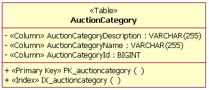 Пример предметного указателя ПанельПанель - это виртуальная таблица без независимого постоянного хранилища. Панель обладает характеристиками и поведениями таблицы и обращается к данным в столбцах из таблицы или таблиц, с которыми у нее определены взаимосвязи. Панели применяются для предоставления более эффективного доступа к информации в одной или нескольких таблицах; они также могут использоваться для установления бизнес-правил для ограничения доступа к данным в таблицах. В приведенном ниже примере объект AuctionView определен как "панель" информации в таблице Auction, показанной в разделе физического моделирования данных настоящей рекомендации. Панели моделируются как классы со стереотипом <<view>>. Атрибуты класса панели - это столбцы из таблиц, на которые ссылается панель. Типы данных столбцов в панели наследуются из таблиц, от которых зависит панель. 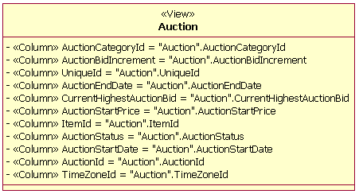 Пример панели ДоменДомен - это механизм, который служит для создания пользовательских типов данных, применимых к столбцам различных таблиц. Домен моделируется как класс со стереотипом <<Domain>>. В приведенном ниже примере домен определен для zip-кода "zip + 4". 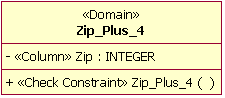 Пример домена Контейнер хранимых процедурКонтейнер хранимых процедур - это совокупность хранимых процедур в Модели данных. Контейнер хранимых процедур создается как класс UML со стереотипом <<SP Container>>. В макете базы данных могут быть созданы несколько контейнеров хранимых процедур. Пустые контейнеры хранимых процедур недопустимы. Хранимая процедураХранимая процедура - это независимая процедура, обычно находящаяся на сервере баз данных. Хранимые процедуры документируются как операции, сгруппированные в классы со стереотипом <<SP Container>>. Операции относятся к стереотипу <<SP>>. В приведенном ниже примере показана операция одной хранимой процедуры (SP_Auction) в классе контейнера с именем AuctionManagement. При проектировании хранимых процедур проектировщику базы данных должны быть известны все соглашения об именах, применяемые конкретной RDBMS. 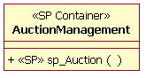 Пример контейнера хранимых процедур и хранимой процедуры Табличное пространствоТабличное пространство представляет пространство памяти, выделяемое таким объектам, как таблицы, хранимые процедуры и предметные указатели. Табличные пространства связаны с конкретной базой данных через взаимосвязь зависимости. Число табличных пространств и способ отображения в них отдельных таблиц зависят от сложности Модели данных. Часто используемые таблицы может потребоваться разбить на несколько табличных пространств. Наоборот, таблицы, не содержащие больших объемов часто используемых данных, можно объединить в одно табличное пространство. Для каждого табличного пространства определен контейнер. Контейнер табличного пространства - это физическое запоминающее устройство для табличного пространства. Хотя для одного табличного пространства могут существовать несколько контейнеров, рекомендуется, чтобы контейнер табличного пространства был связан только с одним табличным пространством. Контейнеры табличных пространств определены как атрибуты табличного пространства; они не моделируются явно. 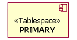 Пример табличного пространства
Схема
|
© Copyright IBM Corp. 1987, 2006. Все права защищены.. |